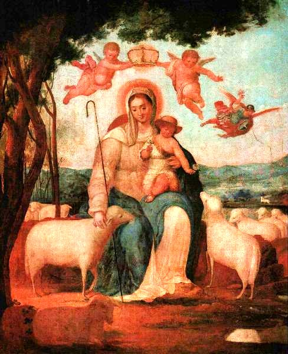

| Quick Facts | Home | Pictures | Information |
Venezuela boasts a rich cultural legacy that combines Andean and Caribbean regional influences with indigenous and Spanish cultures. Here are some insights on Venezuelan culture:
| Venezuelans place a high value on family, and
many of their extended relatives reside nearby or perhaps even in the
same home. Most families don't live with their extended family; they
just live with their immediate family. Venezuelans are renowned for
being amiable, sociable, and extroverted and for placing a high
importance on family. The rich cultural legacy of Venezuela is reflected
in the country's diverse cuisine. Venezuelan traditional cuisine includes the Arepa, a cornmeal cake, the Cachapa, a thick pancake, the Casabe, a yucca-based bread and empanadas, which are packed and deep-fried maize flour patties. Venezuelans are renowned for their love of sweets as well, and famous desserts include Bienmesabe, a coconut-based treat, and Quesillo, a sort of flan. |
Food of Venezuela |
|
 La Divina Pastora, Juan Lovera(A famous Venezuelan artwork) |
The influence of art and literature on the
thoughts and ideas of Venezuelan individuals is noteworthy. Once upon a
time, religious themes dominated art; today, modernism is the dominant
topic in Venezuelan art. In Venezuela, two of the most well-known
painters are Armando Reveron and Arturo Michelena. In Venezuela, it is
common for individuals to make cultural distinctions based on
geographical boundaries, such as those between "Andinos," or people from
the Andean area, "Llaneros," or "Orientales," or those from the east.
In addition, Venezuelans take offence at outside criticism of their country and are quite protective of it. The most common tongue in Venezuela is Spanish. Language peculiarities are well-known among Venezuelans; examples include the use of "chévere" to denote greatness or coolness and "pana" to refer to a buddy. |
In conclusion, Venezuela has a rich cultural legacy that combines Andean and Caribbean regional influences with indigenous and Spanish traditions. Venezuelans are renowned for their love of festivals, art, literature, food, and family.
| SEARCH MORE ABOUT... | |
| Geography & Urbanization | Daily Life |
| Arts & Cultural Institutions | Climate |
| Immigration & Ethnic Composition | Language & Religion |
| History | Pictures |
| Check Your Knowledge - Play a Quiz |
| See the References/Sources used > |
| RATE US |